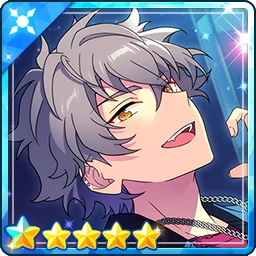
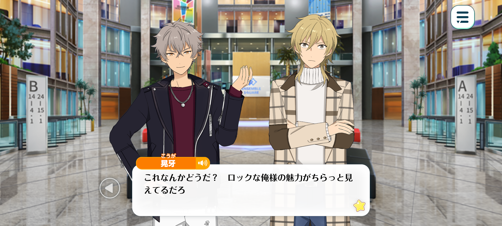
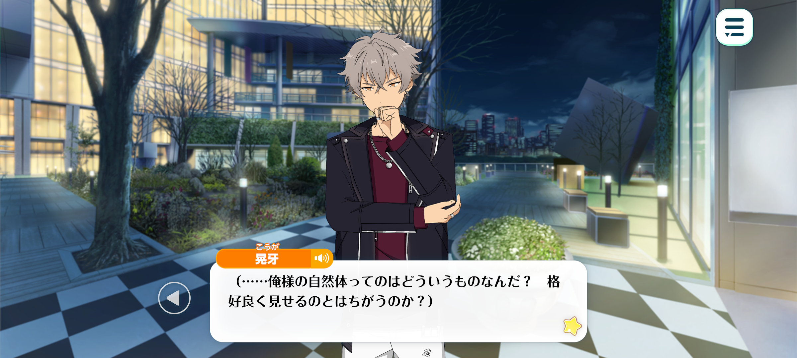

Howling to the Shooting Star | Chapter 2
Idol Story (FS2)




Kaoru: So? Any photos catch your eye?
Koga: How about this one? You can see a bit of my rock spirit shinin’ through!
Kaoru: A bit...? You might as well have a huge sign on your forehead that says "I LOVE ROCK".
What about this one? It's not exactly candid, but... I think it's a pretty cute photo.
Koga: I already said no! I'm not goin' for cute~!
Kaoru: Mmm, alright... If you say so.
Hnng~... Well, it's getting pretty late. I think we should call it a day.
Koga: Oh, yeah... Sorry about that, Hakaze-senpai. I asked ya to come along, and then spent the whole time complainin'.
Kaoru: It's fine, don't worry about it. Besides, I came along to help you with your Feature Live, remember?
If you're not happy with the photos, you're not going to be able to give it your best on the day.
Koga: Yeah. Thanks, Hakaze-senpai. Still, I never thought takin' candid photos would be this damn hard...
Kaoru: Well, I suppose we just have different ideas of what counts as a candid photo.
I was hoping to capture a little more of the everyday Koga-kun, but I'm starting to think you'd rather look cool in every single shot.
Koga: Huh? Is that supposed to be a compliment or an insult?
Kaoru: Let's go with compliment. After all, I think maintaining that sort of attitude even when the cameras aren't rolling is part of being a professional idol.
Anyway, what are you planning to do now, Koga-kun?
I was thinking of grabbing a little something to eat before heading back to the dorms. Wanna come along?
Koga: ...Nah, I'm good.
I can't stop thinkin' about all this stuff. Maybe gettin' some fresh air'll help clear my head.
Kaoru: Alright, then. Just don't stay out too late, ‘kay? See you later.

Koga: (...What does it even mean to be my natural self? Isn't that just the same as looking cool?)
Gyaaaah!! I don't get it at all! What the hell am I supposed to do?!
...Huh? Who just tapped me on the shoulder?
Anzu?! What're you doing hanging around here this late at night?
You're on a break~? The hell are you still working for?
You've nearly finished? What does that matter? When're you planning on heading home? Don't tell me you're thinking of walkin’ back all by yourself.
Jeez... Just let me know when you're ready to leave. I'll wait for ya.
Huh? You think it's unfair to make me wait? Well, then you should've finished up sooner! It's not like you can let your guard down when you're walking home alone at night...
...While we're here and you're on your break, there's something I wanna ask you.
It's about the candid shots for the Feature Live pamphlet. How'd everyone else get on?
I asked Hakaze-senpai to help me out today, but I still don't really get it.
—Ah, right. So the others had trouble with it too.
Sounds like quite a few people weren't really sure what a 'candid' photo was supposed to be.
Thanks for telling me that, Anzu. That's actually pretty helpful.
But I guess I'm still gonna have to sit down and think this through properly...
Hm? Hey, Anzu. Look at the sky! Ain't that somethin'?
Never thought I'd see so many shootin' stars. Didn't even realise there'd be this many out tonight.
...? Oi, Anzu. You even listenin' to me?
(...No answer, huh? She's completely absorbed in the sky. Tch, with her eyes all lit up by the stars, she looks like a little kid.)
If you're that fascinated by the stars, why don't ya make a wish?
Hm...? What's the point of havin' your wishes come true just by askin' for 'em? You've gotta make your own dreams come true with your own strength, Anzu.
...What? What's with that look?
Why'd I suddenly say somethin' like that? I dunno. You were starin' up at the sky, and it just got me thinkin'.
Tch... Whatever. It's nothin'. Just forget I said anything.
...
...Earlier, Hakaze-senpai said he wanted his candid photos to have that kinda natural feel you had just now.
Don't give me that look, Anzu! I'm talkin' about candid photos!
If I'd had a camera with me, I would've taken a picture of you starin' up at the stars just now.
Haaah?! You would've taken a picture of my smug face when I said, "You've gotta make your own dreams come true"?!
Didn't I tell ya to forget I said that?! Quit teasin' me!
...Huh? You're not teasin' me?
You think the fans would've loved a picture of my face just then? Really, Anzu?
U-uh, right... Well, if you say so, I guess I could give it another shot.
...Anyway, back to what I was sayin'. I've been spendin' the whole day thinkin' about what a candid photo of me would even look like.
I think the look on your face just now would've made for a pretty good candid shot. But I still don't really know how I'm supposed to take one.
I want my fans to see the cool side of me. It's been botherin' me, no matter how I look at it.
That's why I'm gonna pack my Feature Live full of everything I think is cool!
I don't want the pamphlet to just show the same old me. I wanna show everyone my cooler side, too.
...That's what they wanted the candid photos for in the first place, huh?
...Huh? Why don't I try taking the project in a different direction?
It's my live, so shouldn't I be doing what I wanna do?
Hehe. Thanks for puttin' up with me being selfish, Anzu. I'm glad I got to talk it all out with ya. ♪
I dunno why, but I feel like a weight’s been lifted off my shoulders. The night air feels pretty damn good, too.
...Hm? Oh, there's another shooting star. You’re askin’ if I’m gonna wish for my live to go well?
I told ya to forget what I said earlier, but I wasn't exactly lyin'. That wouldn't be very rock 'n' roll of me.
Like I said, only you can make your dreams come true. That's why I don't go around makin' wishes.
...Though, sayin' 'em out loud? Now that might be pretty damn rock 'n' roll! ♪
Hey, stars! My wish is for fools all around the world to have their souls shaken by my rock music!
No matter where they are, I'll make sure nobody can ignore my performance! That's what I want my live to be!
..Hah. Don't go lookin’ at me like I’m some stranger, Anzu. C’mon, stand next over here and shout somethin’ at the stars with me.
I need Anzu t’work hard t’make my dreams come true. You ready or what? ♪